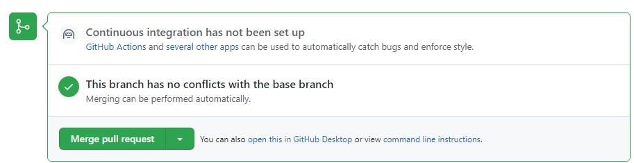

Comandos y forma de trabajar en grupos con GitHub
Comandos importantes
-Clonar un repositorio en local:
git clone <https://link-con-nombre-del-repositorio>
-Crear una rama:
git branch <nombre-de-la-rama>
-Visualizar las ramas
git branch --list
-Cambiar a otra rama
git checkout <nombre-de-la-rama>
-Crear y cambiar de rama
git checkout -b <nombre-de-la-rama>
-Actualizar datos locales
git fetch
-Descargar datos del repositorio
git pull <nombre-remoto> <nombre-rama>
*normalmente git pull origin <nombre-de-la-rama
-Subir cambios realizados
git push <nombre-remoto> <nombre-rama>
*normalmente git push origin <nombre-de-la-rama)
-Mostrar últimos commits de la rama actual
git log
-Registrar cambios para hacer después hacer un commit
git add -A
*con -A se registran todos los cambios, pero también podemos hacerlo
por ficheros con git add
-Hacer commit de los cambios registrados
git commit -m “mensaje que resume los cambios”
-Actualizar tu rama descargan commits de otra rama
git rebase <nombre-remoto> <nombre-rama>
Comandos avanzados
-Guardar cambios registrados pero sin commitear en una pila local
git stash
*permite mover cambios de rama o reservarlos. Tiene comandos para
usar los cambios guardados en la pila como: git stash apply, git stash
pop
-Eliminar commits en ramas locales
git reset HEAD~<nºcommits a eliminar>
*existen varias opciones de reset como por ejemplo –soft y –hard. Con
–soft eliminaremos los commits pero los cambios seguirán estando, esto
permite rehacer los commits o guardar los cambios en una pila. Por su
parte la opción –hard elimina los commits indicados y además elimina los
cambios. Hay que tener mucho cuidado al usar este comando.
El grupo tendrá al menos tantas ramas de trabajo como miembros del
grupo + 2. En un grupo de 4 tendremos las siguientes 6 ramas:
master
io-pages
miembro1
miembro2
miembro3
miembro4
A la hora de trabajar, los miembros deben actualizar siempre su rama
local con el master del repositorio para asegurarse de tener los últimos
cambios del proyecto. Para ellos por ejemplo el miembro 1 cuando vaya a
trabajar en algo del proyecto hará:
git fetch //actualizamos la información que tenemos
sobre el repositorio
git checkout miembro1 //nos cambiamos a nuestra rama
si no estamos en ella
git rebase origin master //actualizamos nuestra rama
con lo nuevo que haya en la rama master del repositorio
trabajamos en los archivos locales
git add -A //registramos los cambios
git commit -m “nuevo_commit” //creamos un
commit
git push origin miembro1 //subimos nuestro commit
con los cambios a nuestra rama del repositorio
ahora desde github se debe crear una pull request contra la rama
master, otro miembro debe revisar los cambios y aceptarlos para que
pasen a formar parte de master
si la rama master tiene cambios que se quieren desplegar, se debe
actualizar la rama io-pages con el master (puede ser mediante PR o
actualizando la rama en local y subiendo los cambios
Creando PRs
Una Pull Request (PR) es la acción de validar un código que
se va a mergear de una rama a otra
Para crear una PR seguimos los siguientes pasos:
Pulsamos en la pestaña “Pull requests” y luego en el botón verde
“New pull request”

Seleccionamos de “base:” la rama que queremos actualizar y de
“compare:” la rama actualizada con nuestros cambios

Esto mostrará los commits que son nuevos y no tiene la rama
seleccionada como “base”. Si está todo bien pulsamos sobre “Create pull
request”
Ponemos una descripción del pull request y un título y volvemos a
pulsar en “Create pull request”.
Ya solo queda aceptar y “mergear” el pull request.
